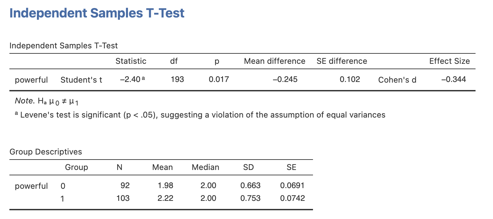
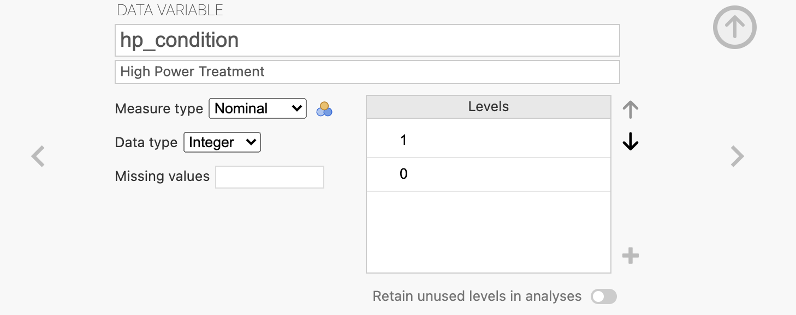
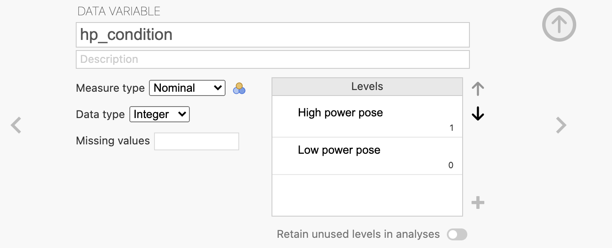
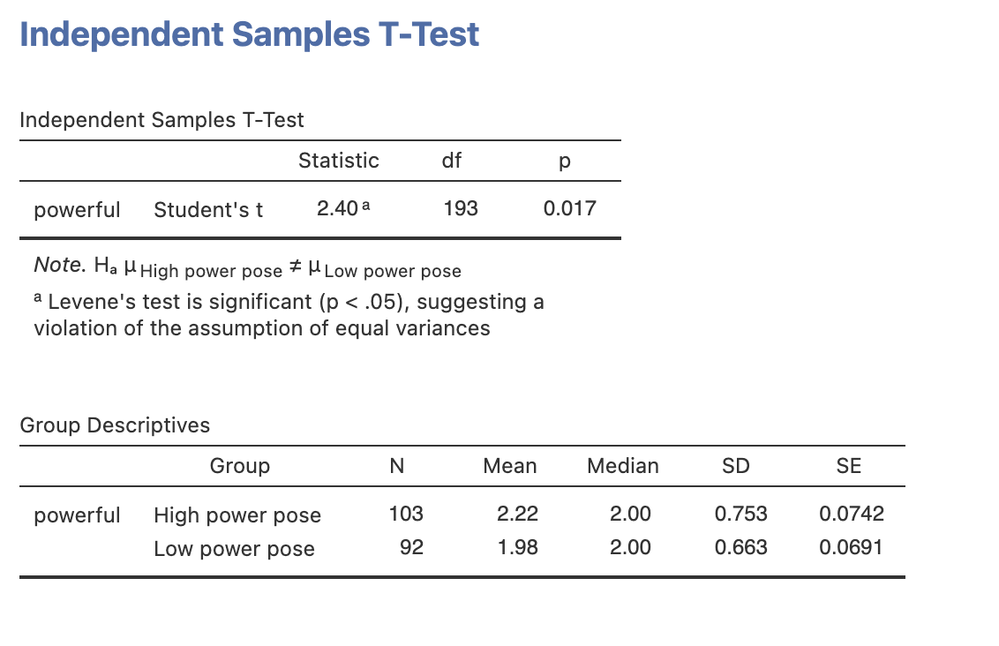
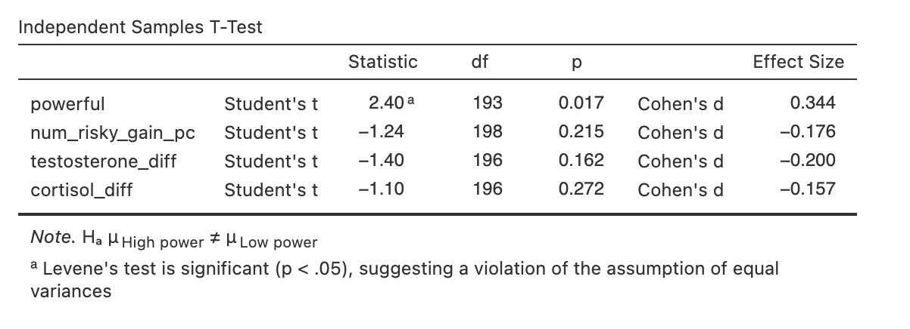
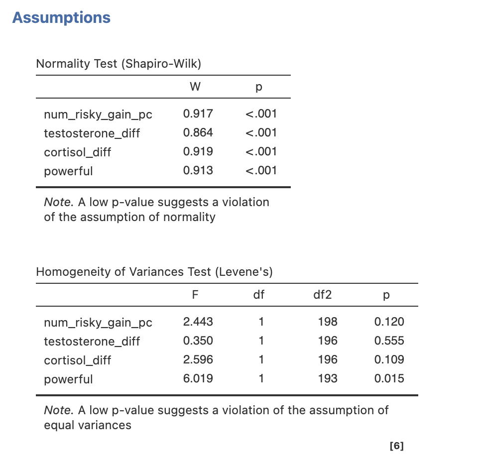
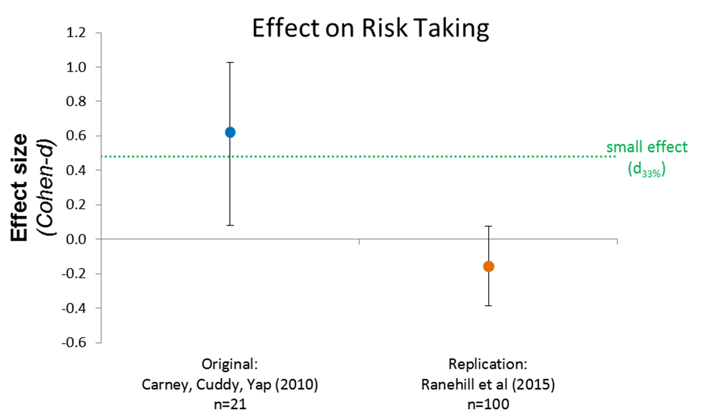
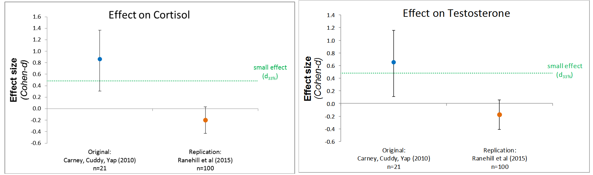

Week 11 : Putting it all together - replicating Power Poses!
This week we will explore some data replicating a famous but contentious experiment. We will combine your skills from across the course to explore different aspects of the study.
| Quantitative Methods | |
|---|---|
| Revision of t-tests |
| Data Skills | |
|---|---|
| Revision of reproducible analyses |
| Open Science | |
|---|---|
| Working with published scientific data |
| Ethics | |
|---|---|
| Questionable research practices | |
| Constructive criticism |
1. The Dataset
We will be working with a replication of a vary famous study showing that our body posture can have far reaching impacts on our attitudes and even our physiology! amazing…
From the abstract of the original paper:
Carney, D. R., Cuddy, A. J. C., & Yap, A. J. (2010). Power Posing: Brief Nonverbal Displays Affect Neuroendocrine Levels and Risk Tolerance. Psychological Science, 21(10), 1363-1368. https://doi.org/10.1177/0956797610383437
Humans and other animals express power through open, expansive postures, and they express powerlessness through closed, contractive postures. But can these postures actually cause power? The results of this study confirmed our prediction that posing in high-power nonverbal displays (as opposed to low-power nonverbal displays) would cause neuroendocrine and behavioral changes for both male and female participants: High-power posers experienced elevations in testosterone, decreases in cortisol, and increased feelings of power and tolerance for risk; low-power posers exhibited the opposite pattern. In short, posing in displays of power caused advantaged and adaptive psychological, physiological, and behavioral changes, and these findings suggest that embodiment extends beyond mere thinking and feeling, to physiology and subsequent behavioral choices. That a person can, by assuming two simple 1-min poses, embody power and instantly become more powerful has real-world, actionable implications. (Carney, Cuddy, and Yap 2010)
This is a compelling result! Perhaps not so suprising that power poses would change our mood - but to cause a change hormones is amazing.
The authors quickly became famous with this result. The second author Amy Cuddy gave high profile talks (TED talk with 74 million views: Video & transcript), wrote books and appeared widely in the media as a result of this work.
These results attracted several replications attempts and the following debate became so intense that it was attracting attention in the mainstream media - including articles summarising the story in the New York Times magazine (Dominus 2017) and the British Psychological Society (Loncar 2021). It even has it’s own Wikipedia page (Wikipedia 2025) and lead to some very awkward photos of british politicians (Wheeler 2018).
We’ll be focusing on one of these replications that tried to faithfully repeat the original methodology (Ranehill et al. 2015) with a large, independent data sample.
2. The Challenge.
We will look at how the replication might have been planned, analyse the data and make a shareable version of the analysis.
We will also use this story to think about some ethical issues around good scientific practices and how we can encourage collaborative and constructive scientific debate.
3. Understanding Power Posing and planning a replication.
Let’s understand the original experiment in a bit more detail. Read through the introduction and methods section of (Carney, Cuddy, and Yap 2010) and answer the following questions.
Read the introduction (you can focus on the hypotheses) and methods section of (Carney, Cuddy, and Yap 2010) and answer the following questions.
Introduction
The authors predict that high-power poses will lead to in testosterone.
The authors predict that high-power poses will lead to in the stress hormone cortisol.
The authors predict that high-power poses will lead to in subjective feelings of power.
The authors predict that high-power poses will lead to in tolerance to risk.
Methods Section
What is the design of this study? .
How were participants assigned to groups? .
What is the independent variable (or grouping factor)? ?
Which of these is NOT a dependent variable of interest? ?
Are participants told the true purpose of the study?
Did the experimentors know which condition the participant they were testing was in?
Read the results section of (Carney, Cuddy, and Yap 2010). Identify the reported statistics for the high-power/low-power pose groups for the following effects: Testosterone, Cortisol and Feelings of Power.
Enter the reported effect sizes (r values) in the table below and use this online tool to convert them to Cohen’d D values.
Finally - use jPower in Jamovi to estimate the sample size you would need to have 90% power to detect this effect again with an type 1 error rate of 0.05. We covered this in Week 5 Section 7
| Hypothesis Test | Reported Effect Size (r) | Converted Effect Size (Cohen’s d) | Sample size per group for 90% power |
|---|---|---|---|
| Testosterone | |||
| Cortisol | |||
| Feelings of power |
(Carney, Cuddy, and Yap 2010) report the following in their results.
As hypothesized, high-power poses caused an increase in testosterone compared with low-power poses, which caused a decrease in testosterone, F(1, 39) = 4.29, p < .05; r = .34 (Fig. 3). Also as hypothesized, high-power poses caused a decrease in cortisol compared with low-power poses, which caused an increase in cortisol, F(1, 38) = 7.45, p < .02; r = .43 Finally, high-power posers reported feeling significantly more “powerful” and “in charge” (M = 2.57, SD = 0.81) than low-power posers did (M = 1.83, SD = 0.81), F(1, 41) = 9.53, p < .01; r = .44.
(Carney, Cuddy, and Yap 2010) reported ANOVAs with r values as effect sizes - but remember that we can convert the effect sizes to Cohen’s d using the online tool.
| Hypothesis Test | Reported Effect Size (r) | Converted Effect Size (Cohen’s d) | Sample size per group for 90% power |
|---|---|---|---|
| Testosterone | 0.34 |
0.723 |
42 |
| Cortisol | 0.43 |
0.953 |
25 |
| Feelings of power | 0.44 |
0.980 |
23 |
4. Analysing the replication data.
Make sure you have downloaded the dataset and loaded it into Jamovi before starting this section.
Take a moment to have a look through the dataset paying particular attention to the ‘Variables’ tab.
Next, we’re going to look at the dataset from (Ranehill et al. 2015) from the replication study. The research team were very careful to closely replicate the original methods.
There were a small number of changes in the replication compared to the original study:
- Whereas participants in Carney et al.’s study held each position for 1 min, we extended this time to 3 min.
- Second, Carney et al. manually configured participants’ positions before leaving the room, whereas participants in our study received instructions on a computer. As in Carney et al.’s study, participants were recorded while posing; the recordings verified that participants complied with task instructions. Because the instructions were given via computer, the experimenter was blind to experimental condition, which negated potential experimenter effects.
- Third, the filler task in our study involved constructing words from letters and spaces; in Carney et al.’s study, the task was to form impressions of faces.
- Finally, we did not use deception, but informed participants briefly in the consent form that the study investigated whether physical position influences hormone levels and behavior (the instructions and consent form are in the Supplemental Material).
These are reasonable changes that aim to improve the orignal design (blinded experimentors, longer pose duration) without making substantial changes to its purpose.
Let’s take a look at the data.
In the original study, (Carney, Cuddy, and Yap 2010) reported that:
High-power posers reported feeling significantly more “powerful” and “in charge” (M = 2.57, SD = 0.81) than low-power posers did (M = 1.83, SD = 0.81), F(1, 41) = 9.53, p < .01; r = .44.
Can you replicate this analysis using the powerful and hp_condition (1 is ‘high power pose’ and 0 is ‘low power pose’) variables in the replication dataset from (Ranehill et al. 2015)? (Carney, Cuddy, and Yap 2010) used an ANOVA but you should use a t-test.
Use the results to fill in the gaps in the reporting below.
The results the original finding about subjective feeling. High-power posers (M = , SD = ) reported feeling low-power posers did (M = , SD = ), t() = , p = ; Cohen’s d = .

High-power posers reported feeling significantly more “powerful” (M = 2.22, SD = 0.753) than low-power posers did (M = 1.978, SD = 0.663), t(193) = -2.40, p = 0.017; Cohen’s d = -0.344.
Something strange has happened - it seems like (Ranehill et al. 2015) must have computed the t-test the other way around compared to our analysis. They have a positive t-value and ours is negative.
Remember that the direction of a t-test (ie whether the t-statistics is positive or negative) doesn’t effect the p-values but does change the interpretation of the result a little.
This is because the order of subtraction makes a difference to the answer - if we do 2 + 3 or 3 + 2 we get the same answer however 2 - 3 and 3 - 2 are not the same.
The means of our groups are 1.98 for low power and 2.22 for high power poses. (Ranehill et al. 2015) report a positive t-value of 2.399 - so they must have run the equivalent of high power minus low power (2.22 - 1.98) and have a positive t-value indicating that the mean for high power is larger.
In contrast, our negative t-value indicates we have run low power minus high power (1.98 - 2.22) and have a negative t-value indicating that the mean for low power is smaller.
The order of the conditions in the t-test is controlled from the data varaible view. Double click on hp_condition in the ‘Variables’ tab, or on the column header of the ‘Data’ tab. We should need a ‘Nominal’ variable with two ‘Levels’ - 0 and 1. The conditions in the t-test are sorted in the order of this ‘Levels’ list.
You can reorder the levels to put 1 first and 0 second - which should update your t-test live to match (Ranehill et al. 2015)’s result.

We could make this even easier to remember by changing the names of the Levels to something more memorable. This is often a good idea when data has used an abstract numerical coding. Statistics is about precision and anything we can do to make the interpretation easier is a good thing.

Your adapted result should match the following:

Can you replicate the core findings from (Carney, Cuddy, and Yap 2010) using the data from (Ranehill et al. 2015)?
Make sure you have completed the ‘Key step’ above before starting this exercise!
Run t-tests to analyse the effect of high vs low power posing on the following variables: powerful, testosterone_diff, cortisol_diff and num_risky_gain_pc as dependent variables.
Read through the results of the original paper (Carney, Cuddy, and Yap 2010) - does the second study confirm the findings of the original?
| Variable | t-value | p-value | Effect size | Replicates (Carney, Cuddy, and Yap 2010)? |
|---|---|---|---|---|
| Feelings of power | ||||
| Risk Taking (Gain) | ||||
| Testosterone | ||||
| Cortisol |

| Variable | t-value | p-value | Effect size | Replicates (Carney, Cuddy, and Yap 2010)? |
|---|---|---|---|---|
| Feelings of power | 2.40 |
0.017 |
0.344 |
Yes |
| Risk Taking (Gain) | -1.24 |
0.215 |
-0.176 |
No |
| Testosterone | -1.40 |
0.162 |
-0.200 |
No |
| Cortisol | -1.10 |
0.272 |
-0.157 |
No |
5. Assumption Checking.
We have the results of the replication! but before going any further we should be sure that the assumptions of our test are met.
Check the assumptions of the high-power vs low-power t-tests for the following variables: powerful, testosterone_diff, cortisol_diff and num_risky_gain_pc.
Are the assumptions of Normality and Homogeneity of Variance confirmed or violated?
| Variable | Normality | Homogeneity of Variance | Preferred Test | |
|---|---|---|---|---|
| Powerful | ||||
| Testosterone | ||||
| Cortisol | ||||
| Risk Taking (Gain) |

| Variable | Normality | Homogeneity of Variance | Preferred Test | |
|---|---|---|---|---|
| Powerful | Violated | Violated | Mann-Whitney U | |
| Testosterone | Violated | Confirmed | Mann-Whitney U | |
| Cortisol | Violated | Confirmed | Mann-Whitney U | |
| Risk Taking (Gain) | Violated | Confirmed | Mann-Whitney U |
(Ranehill et al. 2015) do something unusual with their assumption checking. The don’t explicitly check whether the assumptions are met or not, rather they report both parametric and non-parametric statistics for all their tests (Non-parametric tests are reported in supplemental materials) and state that the conclusions would be the same irrespective of which test is would have been chosen (please do not do this in your reports!).
6. Interpreting the results.
It can be challenging to interpret the results of a null replication. If both the original study and replication show the same finding then things are much more straightforward….
To interpret a failed replication we have to consider two possibilities:
- The original study was a false positive and the replication is a correct rejection.
- The original study was a true positive and the replication is a false negative.
One of our experiments is not accurate.
It is very very difficult to separate these options with 100% confidence… Often a second replication is the way to converge on an answer, and perhaps a third and fourth would be better still.
One thing we do know is that if the effect size from the original study were accurate, then the replication should have had enough participants to see it again.
The same is not true the other way around. Take a look at the figures below:


The replication confidence interval is much smaller than the original and even crosses zero for all three key variables. This strongly indicates a very tiny or zero effect.
The replication effect is so small that, if it is accurate, then the original study with its smaller sample would only have a 5.9% chance of detecting it. (Analysis by Data Colada).
So which study do we trust? Ultimately that your decision as an individual scientist. Consider what you know about both studies and evaulate which you find more compelling.
In this case, there is a substantial consensus in the field that the original effects on hormones was likely a false positive, though the increase in the subjective feelings of power after a power pose replicates well. The replications have several advantages including larger sample sizes, blinded and objective experimentors, and longer pose durations.
The original authors have engaged in the debate and made several points in defense of their work. The original study was famous by the time the replication was carried out - perhaps the participants had heard of the original study. Similarly, the replication study participants were told what was being measured in advance which might have effected their feelings during hte study. Finally, the original study was in hte USA and hte replication in Switzerland - perhaps there is a cultural component to power posing?
7. Ethics & Collaboration.
The original paper attracted huge scientific and media interest
- 61 news outlets
- 33 blogs
- 2 policy sources
- 110 X users
- 1 peer review site
- 11 Facebook pages
- 8 Wikipedia pages
- 1 Redditor
- 11 YouTube creators
- 1 Bluesky user
data from Altmetric, see here for full summary.
This was a mix of constructive debate, harsh criticism and genuine interest. Unfortunately a section of this debate became aggressive and personal towards Amy Cuddy to the extent that it had a serious impact on her life, health and career.
In addition to her fame and influence, Cuddy’s critics seemed obsessed with profits from her book and her fees for speaking engagements. Dollar amounts frequently emerged in conversations where academics discussed the research, and recently, one of her most vocal critics said her speaking engagement fees made him feel “ill.” One Ivy League professor tweeted, “You can listen to her speak about her irreplicable results for $25-$40,000.” In reality, her book and speaking topics have little to do with the power posing studies.
Many of the negative comments were personal in nature and aimed at Cuddy directly. “They were comparing me to Harvey Weinstein,” Cuddy says, recalling a post to the PsychMAP Facebook group which the site owners were eventually persuaded to remove. As if that’s not bad enough, Cuddy also received death threats via direct messages on social media. “I became an untouchable in my field,” she adds, describing how colleagues were shunned for merely friending her on Facebook.
Although Cuddy says Harvard wanted her to stay, she left her full-time position, because she no longer felt safe doing her work (she remains a faculty member at Harvard Business School in Executive Education). “My dean wanted me to stay, but I later told him, I couldn’t stay, because I couldn’t endure this abuse. It was relentless,” says Cuddy. Her experiences inspired her new book (still a work in progress) entitled, Bullies, Bystanders and Bravehearts aimed at helping others who find themselves facing similar experiences.
Exerpts from (Elsesser 2024).
This has led to a follow-up discussion […] consisting of two general camps: those who think Cuddy is being treated unfairly, and those who believe that complaints about bullying or harassment are a distraction from the most serious problem here, which is the elevation of shoddy research to a place of such profitable prominence.
Except from (Singal 2017)
There is perhaps a tension here between our ethical obligation to act with integrity in research and our obligation for act with respect (BPS, n.d.). Or perhaps some people are just bullies.
Have a read through these sources and take a moment to do a quick web search for yourself.
Share what you think about this situation on the padlet board below. what do you think of the situation surrounding this debate? how can we do better in future?
Taking and receiving criticsm is a huge part of progressive constructive science but can be challenging to do well.
8. Summary.
Replication is the gold standard for scientific progress but it is rarely as straightforward as we’d like it to be!
A wide range of issues can arise - including statistical approaches, experimental design and sometimes interpersonal conflict. We have to navigate all of these points with high ethical standards for the scientific community to progress.
Thank you for your time this semester - I hope you have enjoyed these computer practical sessions!